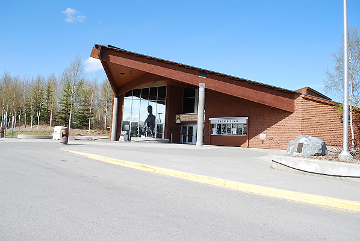

|

The Alaska Native Heritage Center is remarkable for its programs, life-sized village displays, craft-making workstations and friendly, knowledgeable Alaskan Native staff. This museum presents 11 distinct cultural groups of Alaska within its 26 acres and is a must-see for anyone interested in Alaska's history and Native peoples. Located just 10 minutes east of downtown, the grounds are bordered by the Chugach Mountains. Expect to be entranced by storytelling, drumming, hands-on crafts and Native dancers. |